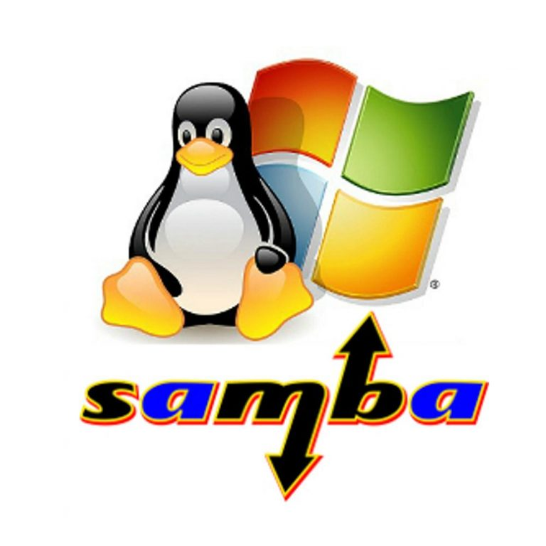

Un servidor de correo es un sistema que se encarga de enviar correos electrónicos desde un cliente de correo a otro. Sin un servidor de correo, no puedes enviar ni recibir correos electrónicos. Los servidores de correo utilizan distintos protocolos de red para comunicarse entre sí.
¿Qué es un servidor FTP?
Los servidores de FTP son aplicaciones de software que posibilitan la transferencia de archivos de un dispositivo (es decir, una computadora con Mac, Windows o Linux) a otro.
Samba es una implementación libre del protocolo de archivos compartidos de Microsoft Windows para sistemas de tipo UNIX. De esta forma, es posible que computadoras con GNU/Linux, Mac OS X o Unix en general se vean como servidores o actúen como clientes en redes de Windows.

¿Qué es un protocolo de red?
Un protocolo de red es un conjunto de reglas y normas que permiten la comunicación de datos entre diferentes dispositivos en una red. Estos protocolos aseguran que los datos sean enviados y recibidos de manera eficiente y segura.
¿Qué es un Hosting y cómo funciona?
El hosting es un servicio de alojamiento web que te permite almacenar los archivos de tu página y subirlos a Internet. Cuando alguien teclea el nombre de dominio de tu sitio web en su navegador, en realidad se está dirigiendo a un servidor específico: la unidad de almacenamiento digital de tu sitio web. Este servidor contiene todos los elementos de tu página, desde texto e imágenes hasta código y videos. Tiene una dirección digital única llamada dirección IP, a la que los usuarios pueden acceder escribiendo el nombre de dominio en su navegador.
Autor: EFRAIN TOLENTINO